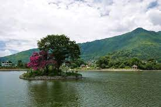
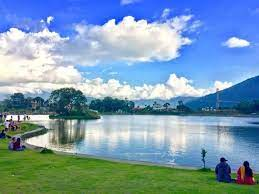
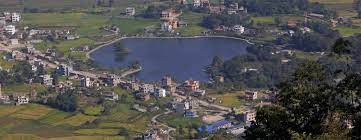
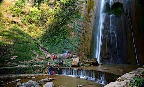
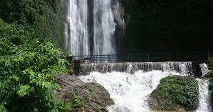
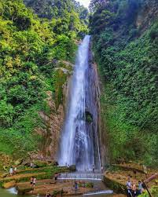

“A platform where you find your digitalized guide.”
EcoTourism
Taudaha



The location is a tranquil area to spend time for individuals who enjoy being near to nature. The location is surrounded by vegetation and offers a relaxing view of a small lake shimmering with sunlight during excellent weather. It also provides a great view of the sunrise. This natural lake is also known for its rich biodiversity. Being the sole natural lake, it is extremely important from an ecological standpoint. It is home to a diverse range of aquatic vegetation, fish, and migratory birds. This location is also ideal for birdwatching. With an increasing number of tourists, it has become a popular picnic destination for families and friends. A high-quality restraint system operates directly next to the lake.
Time to visit:
The best time to visit Taudaha Lake is between October and March.
Location:
Taudaha is a suburb in Kirtipur, Kathmandu, Bagmati Province and has an elevation of 1267 metres. Taudaha is situated nearby to Sano Khokana and Bosan.
Jilbire Waterfall



This waterfall, which drops 100 metres, is a favourite attraction for locals in the Bharatpur area and is quickly gaining popularity, with tourists frequently enjoying swimming there. This is also a popular site for canyoning and homestays with the Gurung, the locals, in Chitwan. You can also go Canyoning at Jalbire, which is an excellent day excursion activity. To visit the Jilbire Waterfall Chitwan, you must pay an admission charge. Entry fees vary depending on whether you are Nepali or a foreigner. Nepalis pay Rs 10 to enjoy the Jalbire waterfall, whereas tourists spend Rs 50. This site is definitely a utopia for Chitwan residents who are scorched by the heat during the summer months and may enjoy nature's gift right outside their door. Nowadays, Jalbire Waterfall is a favourite dating place for young people looking to spend a few hours with their significant other. Jalbire is the perfect destination to spend a great day away from the hustle and bustle of the city. .
Time to visit:
The greatest time to visit Jalbire, Chitwan, is in the summer, when you can enjoy the chilly water despite the hot and humid weather. People can visit the waterfall at any time because it is open all year.
Location:
Jalbire Waterfall Chitwan also know as Lamo Jharana, Jalbire is a twenty-minute walk from the Jalbire temple, situated at the Narayangadh-Muglin road section, sits the waterfall at Chandibhanjyan VDC- 9.